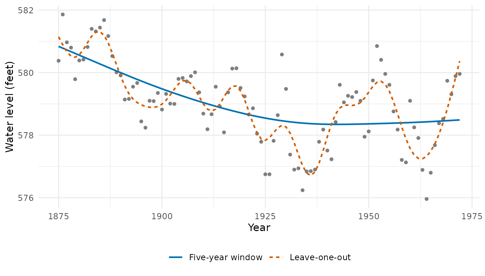

library("naboer")
library("tibble")
library("mgcv")
library("datasets")
have_gratia <- requireNamespace("gratia", quietly = TRUE)
if (have_gratia) {
library("gratia")
library("ggplot2")
}naboer builds the nei argument that mgcv uses to select
smoothness by neighbourhood cross-validation (NCV) or its quadratic
variant (QNCV).
Fit a model with mgcv
How smooth a curve would you use to estimate the water level in the middle of a five-year gap in the record? To mimic that prediction task, leave out the year to be predicted and the two years on either side, then score the prediction for the middle year.
R includes annual measurements of Lake Huron water levels from 1875 to 1972. Use the calendar year as the model predictor and the start of each year as the index for constructing folds. The recorded levels are in feet. Lake Huron data documentation.
year <- as.integer(time(LakeHuron))
lake <- tibble(
year = year,
date = as.Date(sprintf("%d-01-01", year)),
level = as.numeric(LakeHuron)
)Create one fold per year with a window that reaches two calendar years before and after the target. Near the ends of the record it includes only the neighbours that are available.
lake_folds <- neighbourhoods(lake,
index = date, temporal = temporal_window(time_span(2, "years", type = "calendar"))
)Check the fold for 1925. The assessment is the year whose prediction is scored. The omission includes the assessment year and its neighbours, 1923 to 1927. The remaining years make up the analysis data used for fitting that fold.
lake_data <- fold_data(lake_folds)
target <- match(1925L, lake_data$year)
lake_data$year[assessment_indices(lake_folds, folds = target)[[1]]]
#> [1] 1925
lake_data$year[omission_indices(lake_folds, folds = target)[[1]]]
#> [1] 1923 1924 1925 1926 1927The exported indices refer to rows of fold_data(). Pass
those data to as_nei() to check the alignment and use the
same data to fit the model. If you change the observations, rebuild the
folds before fitting.
lake_nei <- as_nei(lake_folds, data = lake_data)Fit water level as a smooth function of year. Supply nei
and method = "NCV" to gam() to choose
smoothness using the five-year windows.
lake_ncv <- gam(level ~ s(year, k = 20),
data = lake_data, method = "NCV", nei = lake_nei, na.action = na.fail
)Fit the same model with nei omitted. With
method = "NCV", mgcv then leaves out only the year it
scores. Both final fits use the full record, with the smoothing
parameter chosen by their respective criteria.
Use gratia to compare the effective degrees of freedom (EDF) of the two smooths. The fit selected with the five-year window has lower EDF and follows broader changes in water level.
tibble(
criterion = c("Leave-one-out", "Five-year window"),
effective_degrees_of_freedom = c(edf(lake_loo)$.edf, edf(lake_ncv)$.edf)
)
#> # A tibble: 2 × 2
#> criterion effective_degrees_of_freedom
#> <chr> <dbl>
#> 1 Leave-one-out 16.8
#> 2 Five-year window 2.07Use add_fitted() to attach the fitted values to their
years for plotting.
lake_curves <- rbind(
transform(add_fitted(lake_data, lake_loo, value = "fitted_level"),
criterion = "Leave-one-out"
),
transform(add_fitted(lake_data, lake_ncv, value = "fitted_level"),
criterion = "Five-year window"
)
)Overlay the two fitted curves on the observed water levels.
ggplot(lake_data, aes(x = year)) +
geom_point(aes(y = level), colour = "grey50", size = 1.2) +
geom_line(
data = lake_curves,
aes(y = fitted_level, colour = criterion, linetype = criterion),
linewidth = 0.8
) +
scale_colour_manual(values = c(
"Five-year window" = "#0072B2", "Leave-one-out" = "#D55E00"
)) +
labs(x = "Year", y = "Water level (feet)", colour = NULL, linetype = NULL) +
theme_minimal() +
theme(legend.position = "bottom")
Use method = "QNCV" for mgcv’s quadratic approximation
to the score. For a Gaussian model with the identity link, as above, the
loss is already quadratic. mgcv
NCV documentation.
You can also use naboer to choose smoothness for soil moisture over time, daily maximum temperature across weather stations and carbon dioxide uptake by plants.
Inspect a fold
Create eight observations in time order. We will score rows 3 and 6 in separate folds, leaving out one extra row on either side of each target.
Use custom_folds() to specify the two sets of row
numbers for each fold.
folds <- custom_folds(x, assessment = list(3L, 6L), omission = list(2:4, 5:7))The fold table shows how many rows are in each set. The
n_buffer column counts the extra omissions. They appear as
buffer_size in summary() and as
omitted in plots.
as_tibble(folds)
#> # A tibble: 2 × 6
#> fold n_assessment n_omission n_analysis n_buffer omitted_fraction
#> <chr> <dbl> <dbl> <dbl> <dbl> <dbl>
#> 1 1 1 3 5 2 0.375
#> 2 2 1 3 5 2 0.375Inspect the row numbers for the first fold. Row 3 is scored, rows 2 and 4 are also left out, and rows 1 and 5 to 8 are used for fitting.
assessment_indices(folds, folds = 1)
#> [[1]]
#> [1] 3
omission_indices(folds, folds = 1)
#> [[1]]
#> [1] 2 3 4
analysis_indices(folds, folds = 1)
#> [[1]]
#> [1] 1 5 6 7 8Choose a design for the prediction task
Start with where, when or for whom the predictions will be made. The table shows common starting points.
| Prediction task | Design to consider |
|---|---|
| New observations from already sampled units | Leave-one-out or random V-fold, if neighbours in training reflect how predictions will be made |
| Predictions with no nearby training observations | Leave out a neighbourhood around each target, or add a buffer around each held-out block |
| New locations in the sampled region | Hold out spatial blocks |
| New periods | Hold out temporal blocks |
| Future observations given data available at the time | Use forecast origins, a horizon and, if needed, a gap |
| New groups | Hold out entire groups or combinations of grouping levels |
| New environments | Hold out groups defined by environmental predictors |
| New taxa | Hold out clades, distance-based blocks or neighbourhoods on a phylogenetic tree |
Spatial and temporal blocks can also separate the environmental conditions of the training and assessment data. Larger errors may then reflect the difficulty of predicting under unfamiliar conditions. Choose a design that represents the range of conditions you expect to predict in. For neighbourhood designs, choose the radius using knowledge of the system or a separate analysis of dependence. Check that the model can be fitted and can make the required predictions in each fold, especially if assessment rows contain factor levels absent from training.
Use a key to identify repeated units or series. Use .by
when the data contain independent domains and automatically generated
neighbourhoods should stay within each domain. Custom fold membership
and existing exclusions are kept as supplied. A V-fold design can
allocate whole blocks from several domains to the same fold. When
forecasting, observations from other domains, including later
observations, can remain available for fitting. Define domains according
to which information would actually be available when making the
prediction.
Read the exported indices
To see how larger omissions are represented, export the original two-fold design.
as_nei(folds)
#> $a
#> [1] 2 3 4 5 6 7
#>
#> $ma
#> [1] 3 6
#>
#> $d
#> [1] 3 6
#>
#> $md
#> [1] 1 2The vector a lists the omitted row numbers for each fold
in turn, and ma marks where each fold ends in that vector.
Here ma is c(3, 6), so the first fold uses
positions 1 to 3 and the second uses positions 4 to 6. The pair
d and md works the same way for assessment. If
a row is assessed in several folds, each assessment contributes to the
criterion without automatic reweighting.
When you pass your model data to as_nei(data = ...), the
alignment check compares the row identifiers in order if you set
id when constructing the folds. Otherwise it compares all
columns, including their order, types and values. Export for mgcv
requires at least two folds. You can inspect a single fold in naboer or
use its row indices for a separate refit.
Sample folds in bam
bam() supports NCV with discrete = TRUE. To
choose smoothness with a sample of folds, keep the full design and pass
sample to as_nei(). The Mauna Loa
example fits a trend and seasonal cycle using this approach.
Covariance and standard errors
Wood’s dependence-adjusted covariance assumes one assessment fold per
observation, reciprocal neighbourhoods, and negligible residual
correlation outside each neighbourhood. Reciprocity means that whenever
row j is in row i’s neighbourhood, row
i is also in row j’s. Asymmetric windows can
still define a cross-validation score.
On affected mgcv releases, as_nei() puts folds in data
row order for covariance calculations when each observation has exactly
one fold assessing it alone. It also translates any explicit sample
numbers to that order. On those releases, requesting raw jackknife
covariance with jackknife = TRUE requires this assessment
layout.
In mgcv 1.9-5, the default dependence-adjusted covariance in
gam() can count a model offset twice. Use
as_nei(folds, jackknife = FALSE) if standard Bayesian
covariance is appropriate for your model. For discrete
bam() in that release, check that prediction standard
errors are finite and that the covariance matrix has no substantially
negative eigenvalues. A sample of one fold can also trigger a warning
about taking a maximum over an empty set.
bam() applies NCV to a penalised linear approximation of
the model. An exact non-Gaussian refit uses the full loss function. The
implementation in bam() is designed for small
neighbourhoods and can be expensive when folds omit large blocks. mgcv
NCV documentation, mgcv
bam documentation.
Check the approximation for large omissions
For non-quadratic loss functions, NCV approximates what happens to the fitted model when observations are left out. QNCV also uses a quadratic approximation to the score, which keeps the criterion finite for supported models. The two methods can differ in how closely they match an exact refit. Wood’s accuracy result as sample size increases assumes the neighbourhood size stays fixed. Check accuracy separately for designs that omit large blocks or much of the future record at each forecast origin.
The repository’s benchmark compares both criteria with exact refits. It holds the smoothing parameter and the basis for the smooth fixed to isolate the effect of the approximation. Approximation script.
For 120 observations, seed 20261017 and a smoothing parameter of 0.2,
relative differences in the Gaussian scores were below
1e-12. In the Poisson example, the differences varied with
the radius of the temporal window.
| Temporal radius | Maximum omitted fraction | NCV relative criterion error | QNCV relative criterion error |
|---|---|---|---|
| 7 | 12.5% | 0.23% | 0.47% |
| 15 | 25.8% | 6.04% | 15.10% |
| 30 | 50.8% | 0.37% | 25.37% |
| 48 | 80.8% | 15.36% | 68.98% |
These results describe one simulated data set. The error can rise or
fall as the window gets wider, and an accurate total score can hide
discrepancies in individual predictions. The script also checks whether
refits converge and records the largest NCV prediction difference on the
scale of the model’s linear predictor. For your own model, compare both
scores and predictions across representative folds and smoothing
parameters. If the approximation is unsuitable, use
as_rset() to export the folds for explicit refitting.
References
Roberts et al. (2017), Cross-validation strategies for data with temporal, spatial, hierarchical, or phylogenetic structure, Ecography 40, 913–929. doi:10.1111/ecog.02881.
Wood (2026), On Neighbourhood Cross Validation, Statistical Science 41, 827–846. doi:10.1214/25-STS1015.